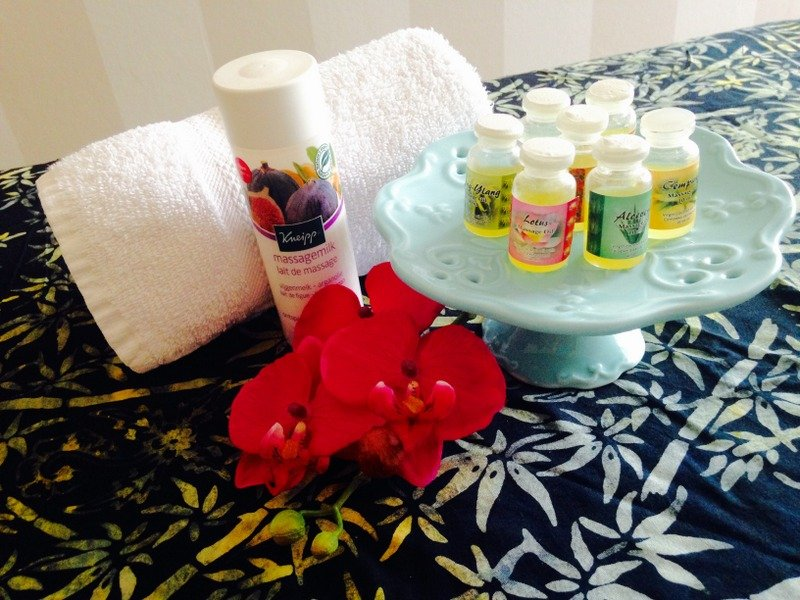
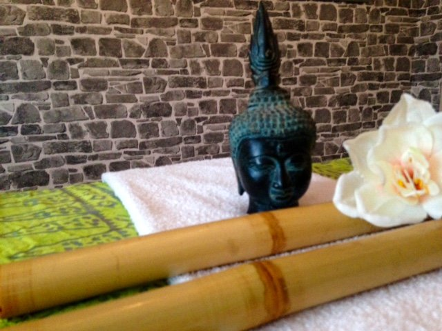
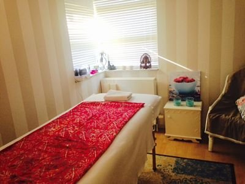

gun jezelf vitaliteit!
Mijn massage richt zich op lichaam en geest. Zo kun je als sporter bij mij terecht met (spier)klachten, maar ook als je niet intensief sport of last hebt van vastzittende spieren kan ik ontspanning bieden. Tot ziens in mijn massagepraktijk!
Massages

De nadruk ligt op ontspanning, afvoeren van afvalstoffen en het bevorderen van de bloedsomloop. Het maakt het bindweefsel en de spieren los, waardoor je je soepeler kunt bewegen en sneller herstelt.
Deze massage vindt zijn oorsprong op Hawaii, met als uitgangspunt "harmonie in dynamiek". Een harmonische, maar toch diepe massagevorm met lange, vloeiende strijkingen.

Deze komt oorspronkelijk uit China. De bamboestok vormt een verlengstuk van de handen. Hierdoor heeft de massage een dieper effect op het spierweefsel en lossen knopen, stijfheid en spanning snel op.
Over mijzelf
Mijn naam is Anita Vertelman. Ik ben 15 jaar werkzaam geweest in de gezondheidszorg en ben nog altijd geïnteresseerd in de mens en alles wat daarmee samenhangt.
Met een massage hoop ik je meer in balans te brengen en weer in contact te komen met jezelf. Waardoor het dagelijks leven ontspannen, evenwichtig, vitaler en dus makkelijker wordt!
Praktische informatie

Contact
Bellen of WhatsApp.
Massagepraktijk Bavel
Valkenlaar 71
4854 GR Bavel
 Massagepraktijk Bavel
Massagepraktijk Bavel